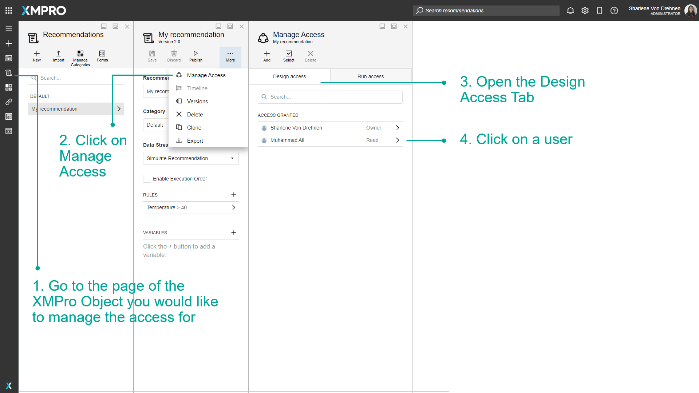
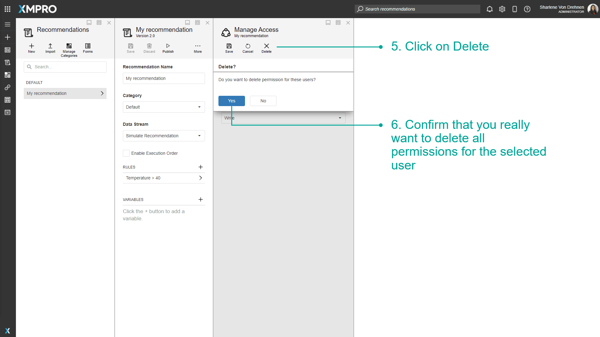
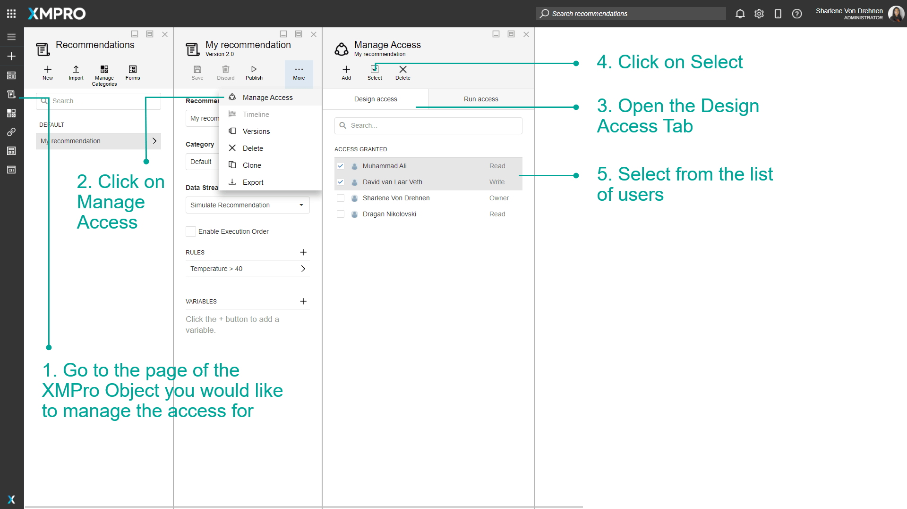
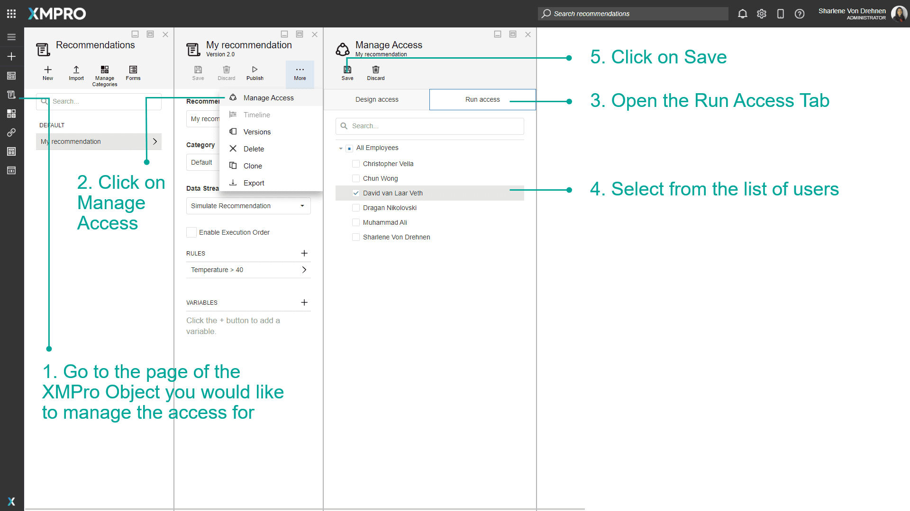

Manage Access
XMPro Objects such as Data Streams, Recommendations, Applications, and more can be shared with different users. The person that originally created the XMPro Object will be listed as the owner. When sharing the XMPro Object with other users, users can either be given Co-owner, read, or write access.
Note
It is recommended that you read the article listed below to improve your understanding of Managing Access.
Giving permissions to users
To share XMPro Objects with users, follow the steps below:
- Go to the page of the XMPro Object you would like to manage the access for.
- Click on Manage Access.
- Open the Design Access Tab.
- Click Add.

5. Add the user to give them access.
6. Choose read, write, or co-owner permissions.
7. Click Ok.

Editing User permissions
To edit the permissions of an existing user, follow the steps below:
- Go to the page of the XMPro Object you would like to manage the access for.
- Click on Manage Access.
- Open the Design Access Tab.
- Click on a user.

5. Edit their permissions.
6. Click on Save.

Deleting permissions from Users
To delete the permissions of an existing user, follow the steps below:
- Go to the page of the XMPro Object you would like to manage the access for.
- Click on Manage Access.
- Open the Design Access Tab.
- Click on a user.
5. Click on Delete.
6. Confirm that you really want to delete all permissions for the selected user.

Deleting permissions of multiple Users
To delete the permissions of multiple existing users, follow the steps below:
- Go to the page of the XMPro Object you would like to manage the access for.
- Click on Manage Access.
- Open the Design Access Tab.
- Click on Select.
- Select from the list of users.

6. Click on Delete.
7. Confirm that you really want to delete all permissions for the selected users.

Editing Permissions on the Run Access
To edit Run Access permissions, follow the steps below:
- Go to the page of the XMPro Object you would like to manage the access for.
- Click on Manage Access.
- Open the Run Access Tab.
- Select from the list of users.
- Click on Save.

Further Reading
Last modified: August 19, 2025